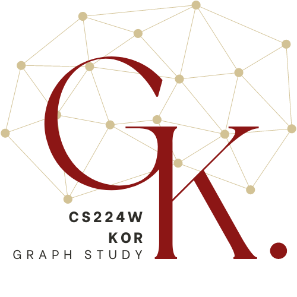

# CS224W-KOR Blog

CS224w를 공부하며 정리한 글들을 모아둔 블로그입니다.

### CS224W: Machine Learning with Graphs 

- CS224w Stanford / Fall 2021 : [Original Lecture Homepage](http://web.stanford.edu/class/cs224w/index.html)
    - [Schedule & Slides](http://web.stanford.edu/class/cs224w/index.html#schedule)
- [CS224w 강의 Playlist](https://www.youtube.com/playlist?list=PLoROMvodv4rPLKxIpqhjhPgdQy7imNkDn)

[](https://hits.seeyoufarm.com)

---
